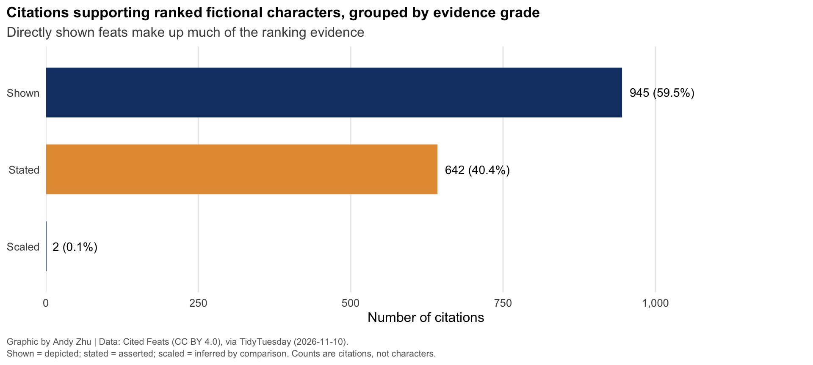
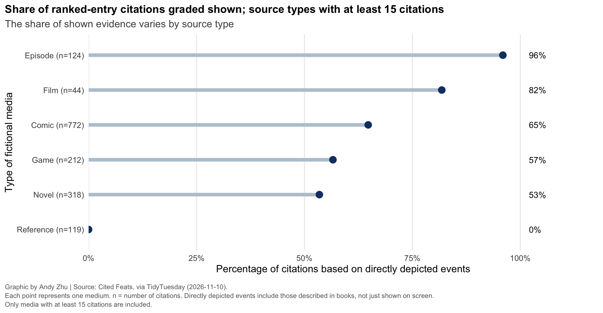
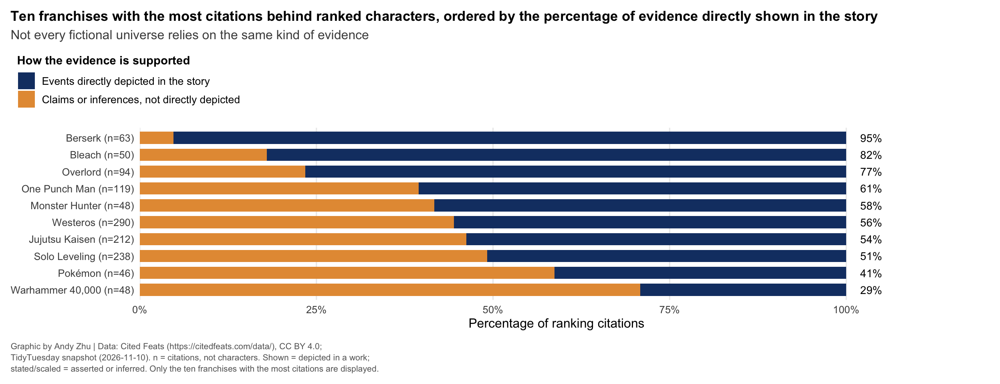

You can count work on this week’s TidyTuesday toward the exceptional work.
Explore the week’s TidyTuesday challenge. Develop a research question, then answer it through a short data story mainly composed of effective visualizations. Provide sufficient background for readers to grasp your narrative. Refer to the Homework Instructions ⭐ page on the course website for details on how to submit this part.
Background infomation: This dataset comes from Cited Feats includes power rankings of fictional characters from different franchises. It records the evidence in three categories: shown, stated, and scaled. Shown refers to something that is directly shown in the story, stated refers to something that is said by a character or narrator, and scaled refers to something that is only implied by comparison with something else. We can examine how fictional power rankings are supported by different types of evidence.
Research question:How much of the evidence supporting fictional power rankings is directly shown, rather than stated or inferred, and how does that balance differ by source type and franchise?
ggplot(evidence_totals, aes(x = count, y = evidence, fill = evidence)) +geom_col(width =0.65, show.legend =FALSE) +geom_text(aes(label =paste0(scales::comma(count), " (", scales::percent(share, accuracy =0.1), ")")), hjust =-0.12, size =3.7) +scale_fill_manual(values =c("Shown"="#163E72", "Stated"="#E59A42", "Scaled"="#8394A5")) +scale_x_continuous(labels = scales::label_comma(), expand =expansion(mult =c(0, 0.32))) +labs(title ="Citations supporting ranked fictional characters, grouped by evidence grade",subtitle ="Directly shown feats make up much of the ranking evidence",x ="Number of citations", y =NULL,caption =paste0("Graphic by Andy Zhu | Data: Cited Feats (CC BY 4.0), via TidyTuesday (2026-11-10).\n","Shown = depicted; stated = asserted; scaled = inferred by comparison. Counts are citations, not characters.")) + viz_theme

Most citations used to support fictional character rankings come from events directly shown in the story. 59.5% of all citations (945) are shown evidence, while stated evidence is about 40.4% (642). Only 0.1% (2) comes from comparisons between characters. It can be seen that rankings rely more on depicted events than on statements/comparisons.
Does the evidence balance differ across source types?
# A tibble: 6 × 5
type total shown_n shown_share type_label
<chr> <int> <int> <dbl> <fct>
1 reference 119 0 0 Reference (n=119)
2 novel 318 170 0.535 Novel (n=318)
3 game 212 120 0.566 Game (n=212)
4 comic 772 500 0.648 Comic (n=772)
5 film 44 36 0.818 Film (n=44)
6 episode 124 119 0.960 Episode (n=124)
Code
ggplot(source_summary, aes(y = type_label)) +geom_segment(aes(x =0, xend = shown_share, yend = type_label), color ="#B9C7D4", linewidth =2) +geom_point(aes(x = shown_share), color ="#163E72", size =3.5) +geom_text(aes(x =1.02, label = scales::percent(shown_share, accuracy =1)), hjust =0, size =3.6) +scale_x_continuous(limits =c(0, 1.18), breaks =seq(0, 1, 0.25), labels = scales::label_percent(), expand =expansion(mult =c(0, 0))) +labs(title ="Share of ranked-entry citations graded shown; source types with at least 15 citations",subtitle ="The share of shown evidence varies by source type",x ="Percentage of citations based on directly depicted events", y ="Type of fictional media",caption =paste0("Graphic by Andy Zhu | Source: Cited Feats, via TidyTuesday (2026-11-10).\n","Each point represents one medium. n = number of citations. ","Directly depicted events include those described in books, not just shown on screen.\n","Only media with at least 15 citations are included.")) + viz_theme

The percentage of directly depicted evidence in all sources varies strongly. While in episodes and films the majority of the evidence is directly depicted, in comics, games and novels there are more statements or even indirectly given evidence. Episodes and films thereby are largely based on directly given episodes, while in other sources there is a stronger proportion of statements.
Which franchises show their feats rather than only tell us?
ggplot(franchise_long, aes(x = share, y = franchise_label, fill = evidence)) +geom_col(width =0.72) +geom_text(data = franchise_summary, aes(x =1.02, y = franchise_label, label = scales::percent(shown_share, accuracy =1)," directly shown"),inherit.aes =FALSE, hjust =0, size =3.6) +scale_fill_manual(values =c("Shown"="#163E72", "Stated or scaled"="#E59A42"),labels =c("Shown"="Events directly depicted in the story", "Stated or scaled"="Claims or inferences, not directly depicted")) +scale_x_continuous(limits =c(0, 1.18), breaks =seq(0, 1, 0.25), labels = scales::label_percent(), expand =expansion(mult =c(0, 0))) +labs(title ="Ten franchises with the most citations behind ranked characters, ordered by the percentage of evidence directly shown in the story",subtitle ="Not every fictional universe relies on the same kind of evidence",x ="Percentage of ranking citations", y =NULL, fill ="How the evidence is supported",caption =paste0("Graphic by Andy Zhu | Data: Cited Feats (https://citedfeats.com/data/), CC BY 4.0;\n","TidyTuesday snapshot (2026-11-10). n = citations, not characters. Shown = depicted in a work;\n","stated/scaled = asserted or inferred. Only the ten franchises with the most citations are displayed.")) +guides(fill =guide_legend(title.position ="top", nrow =2, byrow =TRUE)) + viz_theme +theme(legend.position ="top", legend.location ="plot", legend.justification ="left", legend.box.just ="left", legend.direction ="vertical",legend.title =element_text(hjust =0, face ="bold", size =11), legend.text =element_text(size =10), plot.margin =margin(10, 25, 10, 10))

The top three franchises with the highest percentage of directly depicted evidence are Berserk with 95%, Bleach with 82%, and Overlord with 77%. On the opposite end of the spectrum is Warhammer 40,000 with only 29% of its cited evidence being directly depicted. This shows that the types of evidence that are used to support the rankings of characters from popular fictional franchises vary greatly. There are franchises where most of the evidence for a ranking is based on events shown in the story, while some other franchises’ evidence are mainly statements or comparisons.
Overall, the analysis shows that there is a lot of direct evidence of fictional characters being used in support of power rankings of other fictional characters. How much of that evidence is direct and shown in the sources varies by type of source and by franchise. Episodes and films have the highest percentages of directly depicted evidence, whereas reference sources (as defined here) rely entirely on statements and comparisons in this dataset. Of the ten most-cited franchises here, the greatest proportion of directly depicted evidence supporting power rankings is found in Berserk sources, while the lowest such proportion is found in sources supporting power rankings for characters from Warhammer 40,000 sources. Therefore, when comparing fictional characters, it is important to consider not only their rankings but also the evidence used to support them.
Source Code
---title: "Homework 08"---## TidyTuesday Part (Optional)::: {.callout-important title="Instructions"}You can count work on this week's TidyTuesday toward the exceptional work.:::Explore the week's [TidyTuesday](https://github.com/rfordatascience/tidytuesday) challenge. Develop a research question, then answer it through a short data story mainly composed of [effective visualizations](https://docs.google.com/presentation/d/1Q-C0sFxYGQvkxb6PU6OM_YOv6Nilalpk-IWb362PoRc/preview?slide=id.g13360dab5d5_0_61#slide=id.g13360dab5d5_0_61). Provide sufficient background for readers to grasp your narrative. Refer to the Homework Instructions ⭐ page on the course website for details on how to submit this part.Background infomation: This dataset comes from Cited Feats includes power rankings of fictional characters from different franchises. It records the evidence in three categories: shown, stated, and scaled. Shown refers to something that is directly shown in the story, stated refers to something that is said by a character or narrator, and scaled refers to something that is only implied by comparison with something else. We can examine how fictional power rankings are supported by different types of evidence.Research question:How much of the evidence supporting fictional power rankings is directly shown, rather than stated or inferred, and how does that balance differ by source type and franchise?```{r}library(tidyverse)rankings <-read_csv("https://raw.githubusercontent.com/rfordatascience/tidytuesday/main/data/2026/2026-11-10/fiction_rankings.csv", show_col_types =FALSE)citation_rows <-read_csv("https://raw.githubusercontent.com/rfordatascience/tidytuesday/main/data/2026/2026-11-10/fiction_citations.csv",show_col_types =FALSE)ranked_entries <- rankings |>filter(!is.na(rank), !is.na(citations), citations >0)ranked_citations <- citation_rows |>filter(subject_kind =="entry", confidence %in%c("shown", "stated", "scaled")) |>semi_join(ranked_entries |>select(franchise_slug, entry_id), by =c("franchise_slug"="franchise_slug", "subject_id"="entry_id"))ranked_entries |>summarise(ranked_characters =n(), franchises =n_distinct(franchise_slug), total_citations =sum(citations), shown_citations =sum(shown),stated_citations =sum(stated), scaled_citations =sum(scaled))```1. What kind of evidence supports these rankings?```{r}evidence_totals <- ranked_entries |>summarise(Shown =sum(shown), Stated =sum(stated), Scaled =sum(scaled)) |>pivot_longer(everything(), names_to ="evidence", values_to ="count") |>mutate(share = count /sum(count), evidence =factor(evidence, levels =c("Scaled", "Stated", "Shown")))evidence_totalsviz_theme <-theme_minimal(base_size =12) +theme(panel.grid.minor =element_blank(), panel.grid.major.y =element_blank(), plot.title.position ="plot",plot.title =element_text(face ="bold", size =13), plot.subtitle =element_text(color ="grey30"), plot.caption.position ="plot",plot.caption =element_text(hjust =0, size =8, color ="grey40", margin =margin(t =12), lineheight =1.1))``````{r}#| fig-width: 10#| fig-height: 4.5ggplot(evidence_totals, aes(x = count, y = evidence, fill = evidence)) +geom_col(width =0.65, show.legend =FALSE) +geom_text(aes(label =paste0(scales::comma(count), " (", scales::percent(share, accuracy =0.1), ")")), hjust =-0.12, size =3.7) +scale_fill_manual(values =c("Shown"="#163E72", "Stated"="#E59A42", "Scaled"="#8394A5")) +scale_x_continuous(labels = scales::label_comma(), expand =expansion(mult =c(0, 0.32))) +labs(title ="Citations supporting ranked fictional characters, grouped by evidence grade",subtitle ="Directly shown feats make up much of the ranking evidence",x ="Number of citations", y =NULL,caption =paste0("Graphic by Andy Zhu | Data: Cited Feats (CC BY 4.0), via TidyTuesday (2026-11-10).\n","Shown = depicted; stated = asserted; scaled = inferred by comparison. Counts are citations, not characters.")) + viz_theme```Most citations used to support fictional character rankings come from events directly shown in the story. 59.5% of all citations (945) are shown evidence, while stated evidence is about 40.4% (642). Only 0.1% (2) comes from comparisons between characters. It can be seen that rankings rely more on depicted events than on statements/comparisons.2. Does the evidence balance differ across source types?```{r}source_summary <- ranked_citations |>filter(!is.na(type)) |>group_by(type) |>summarise(total =n(), shown_n =sum(confidence =="shown"),.groups ="drop") |>filter(total >=15) |>mutate(shown_share = shown_n / total, type_label =paste0(str_to_title(type), " (n=", scales::comma(total), ")")) |>arrange(shown_share) |>mutate(type_label =factor(type_label, levels = type_label))source_summary``````{r}#| fig-width: 10#| fig-height: 5.2ggplot(source_summary, aes(y = type_label)) +geom_segment(aes(x =0, xend = shown_share, yend = type_label), color ="#B9C7D4", linewidth =2) +geom_point(aes(x = shown_share), color ="#163E72", size =3.5) +geom_text(aes(x =1.02, label = scales::percent(shown_share, accuracy =1)), hjust =0, size =3.6) +scale_x_continuous(limits =c(0, 1.18), breaks =seq(0, 1, 0.25), labels = scales::label_percent(), expand =expansion(mult =c(0, 0))) +labs(title ="Share of ranked-entry citations graded shown; source types with at least 15 citations",subtitle ="The share of shown evidence varies by source type",x ="Percentage of citations based on directly depicted events", y ="Type of fictional media",caption =paste0("Graphic by Andy Zhu | Source: Cited Feats, via TidyTuesday (2026-11-10).\n","Each point represents one medium. n = number of citations. ","Directly depicted events include those described in books, not just shown on screen.\n","Only media with at least 15 citations are included.")) + viz_theme```The percentage of directly depicted evidence in all sources varies strongly. While in episodes and films the majority of the evidence is directly depicted, in comics, games and novels there are more statements or even indirectly given evidence. Episodes and films thereby are largely based on directly given episodes, while in other sources there is a stronger proportion of statements.3. Which franchises show their feats rather than only tell us?```{r}franchise_summary <- ranked_entries |>group_by(franchise) |>summarise(total =sum(citations), shown_n =sum(shown), other_n =sum(stated + scaled), .groups ="drop") |>arrange(desc(total)) |>slice_head(n =10) |>mutate(shown_share = shown_n / total, franchise_label =paste0(franchise, " (n=", scales::comma(total), ")")) |>arrange(shown_share) |>mutate(franchise_label =factor(franchise_label, levels = franchise_label))franchise_long <- franchise_summary |>select(franchise_label, total, shown_n, other_n) |>pivot_longer(c(shown_n, other_n), names_to ="evidence", values_to ="count") |>mutate(evidence =recode(evidence, "shown_n"="Shown", "other_n"="Stated or scaled"),evidence =factor(evidence, levels =c("Shown", "Stated or scaled")), share = count / total)franchise_summary |>select(franchise, total, shown_n, other_n, shown_share)``````{r}#| fig-width: 13#| fig-height: 5#| out-width: "100%"ggplot(franchise_long, aes(x = share, y = franchise_label, fill = evidence)) +geom_col(width =0.72) +geom_text(data = franchise_summary, aes(x =1.02, y = franchise_label, label = scales::percent(shown_share, accuracy =1)," directly shown"),inherit.aes =FALSE, hjust =0, size =3.6) +scale_fill_manual(values =c("Shown"="#163E72", "Stated or scaled"="#E59A42"),labels =c("Shown"="Events directly depicted in the story", "Stated or scaled"="Claims or inferences, not directly depicted")) +scale_x_continuous(limits =c(0, 1.18), breaks =seq(0, 1, 0.25), labels = scales::label_percent(), expand =expansion(mult =c(0, 0))) +labs(title ="Ten franchises with the most citations behind ranked characters, ordered by the percentage of evidence directly shown in the story",subtitle ="Not every fictional universe relies on the same kind of evidence",x ="Percentage of ranking citations", y =NULL, fill ="How the evidence is supported",caption =paste0("Graphic by Andy Zhu | Data: Cited Feats (https://citedfeats.com/data/), CC BY 4.0;\n","TidyTuesday snapshot (2026-11-10). n = citations, not characters. Shown = depicted in a work;\n","stated/scaled = asserted or inferred. Only the ten franchises with the most citations are displayed.")) +guides(fill =guide_legend(title.position ="top", nrow =2, byrow =TRUE)) + viz_theme +theme(legend.position ="top", legend.location ="plot", legend.justification ="left", legend.box.just ="left", legend.direction ="vertical",legend.title =element_text(hjust =0, face ="bold", size =11), legend.text =element_text(size =10), plot.margin =margin(10, 25, 10, 10))```The top three franchises with the highest percentage of directly depicted evidence are Berserk with 95%, Bleach with 82%, and Overlord with 77%. On the opposite end of the spectrum is Warhammer 40,000 with only 29% of its cited evidence being directly depicted. This shows that the types of evidence that are used to support the rankings of characters from popular fictional franchises vary greatly. There are franchises where most of the evidence for a ranking is based on events shown in the story, while some other franchises' evidence are mainly statements or comparisons.Overall, the analysis shows that there is a lot of direct evidence of fictional characters being used in support of power rankings of other fictional characters. How much of that evidence is direct and shown in the sources varies by type of source and by franchise. Episodes and films have the highest percentages of directly depicted evidence, whereas reference sources (as defined here) rely entirely on statements and comparisons in this dataset. Of the ten most-cited franchises here, the greatest proportion of directly depicted evidence supporting power rankings is found in Berserk sources, while the lowest such proportion is found in sources supporting power rankings for characters from Warhammer 40,000 sources. Therefore, when comparing fictional characters, it is important to consider not only their rankings but also the evidence used to support them.